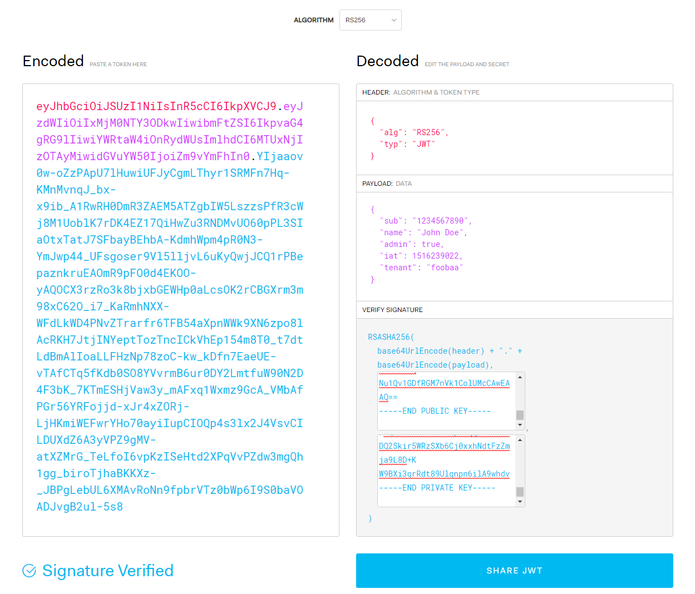
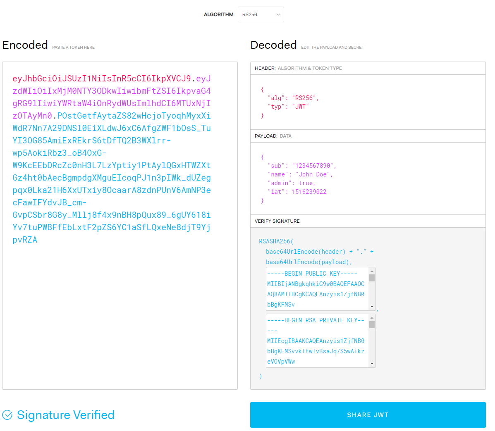
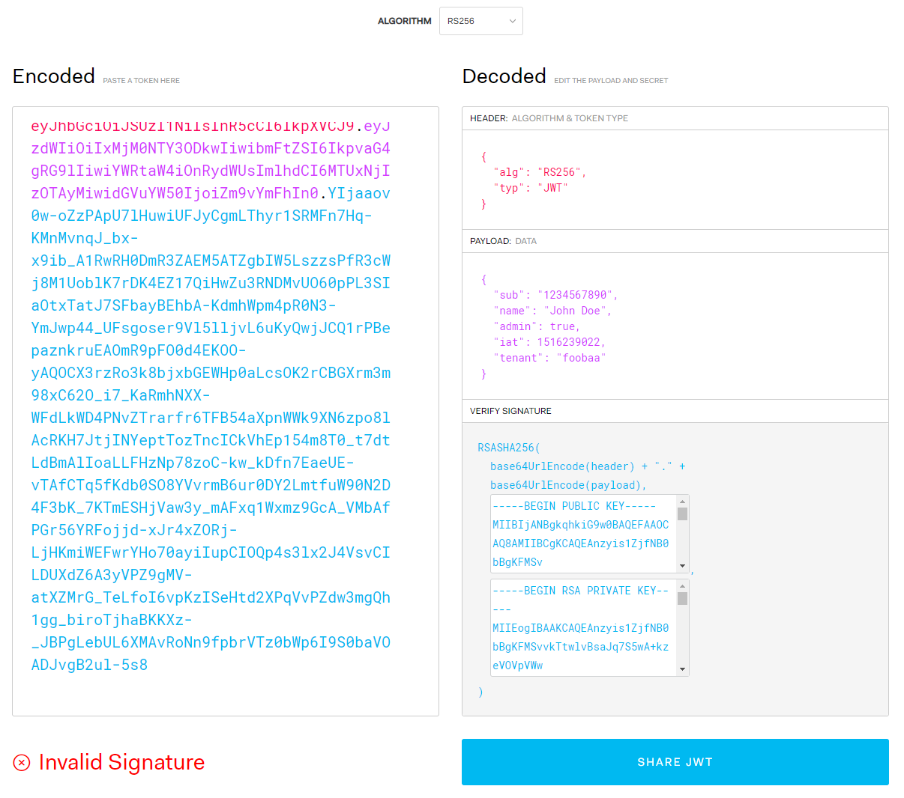
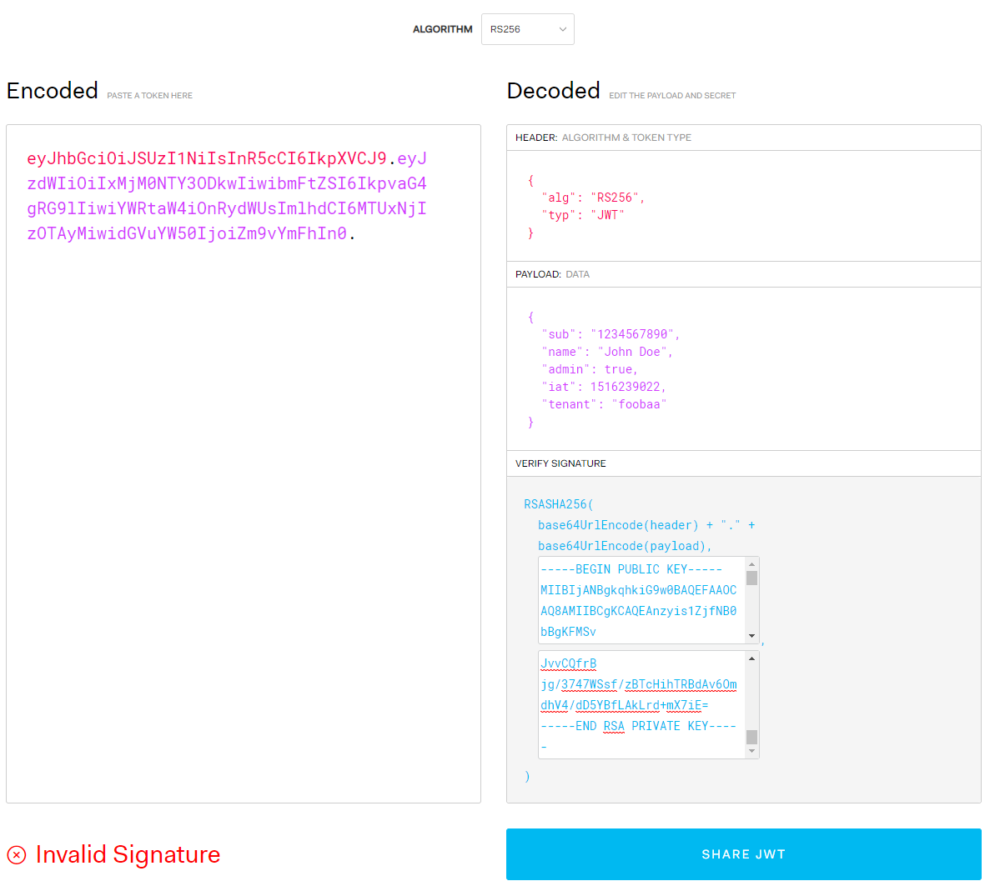
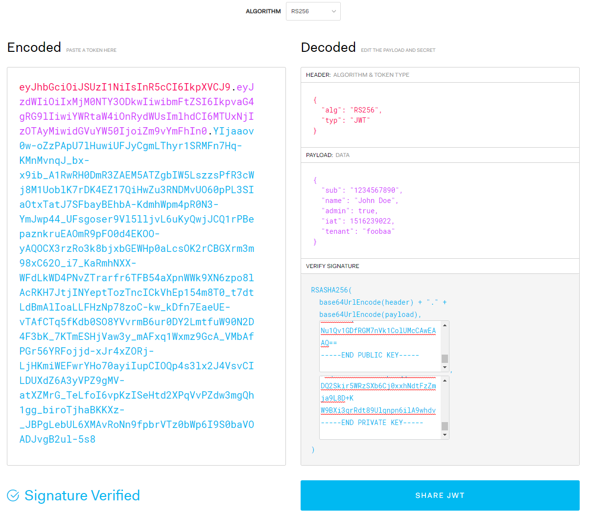

Digital Certificates
June 8, 2020 - 9 mins read time - 1862 words - garrardkitchen
I’ve been wanting to put some notes down on digital certificates, signing and JWT for some time now. I find there are plenty of confusing terms involved in this area, plus a few nuances that have added to my personal confusion. I feel it now important to document these before I forget and move on [to another project].
So, what’s triggered this post? Well, one of many tasks I’m involved in [juggling] evolves SSO (single sign on). Albeit, mainly focused on the architecture on this task, I have compiled a few PoCs where I’m using digital certificates for authentication. In particular, SSOing into Twilio Flex and using an identity field returned from their I.AM service, to seamlessly log into our internal CRM, securely using a digital certificate.
Terms
Ok, let’s start with a few terms. I’ll slowly integrate these terms in the following examples.
-
Keys
A key is something that is used to encrypt a piece of data (think JWT payload). It can be phrase (series of characters) or a public/private key held in a digital certificate.
-
Hash
A hash is a piece of data, that cannot be reengineered to reveal it’s original content, also referred to as a digest or one-way hash.
-
SHA (Secure Hashing Algorithm)
It is for cryptographic security. It is used to produce an irreversible and unique hash.
-
Encryption
The process of converting something to gobbledygook and only be able to read it when you have the key used when it was encrypted.
-
Digital signature
The encrypted hash, that proves the data has not been tampered with in-flighted AND verifies the identity of the entity presenting it.
-
Signing
The process of creating the digital signature.
-
Base64
The more efficient was of encoding and sending data over a network.
-
Cipher algorithm
A cipher algorithm is a mathematical formula designed specifically to obscure the value and content of data. Most valuable cipher algorithms use a key as part of the formula. This key is used to encrypt the data, and either that key or a complementary key is needed to decrypt the data back to a useful form.
-
RSA (Rivest–Shamir–Adleman)
RSA is one of the first public-key cryptosystems and is widely used for secure data transmission. In such a cryptosystem, the encryption key is public and distinct from the decryption key which is kept secret (private).
-
Symmetric Encryption
Symmetric encryption is a type of encryption where only one key (a secret key) is used to both encrypt and decrypt electronic information.
-
Asymmetric Encryption
Asymmetric Encryption is a form of Encryption where keys come in pairs. What one key encrypts, only the other can decrypt.
-
X.509
Is a standard format for public key certificates. Each X.509 certificate includes a public key, identifying information, and a digital signature.
Of course, if this [digital signature] is new to you, the above won’t (yet) make much sense.
I’m going to walk you through an example, well 2 actually. One that used a phrase as a key(aka keyphrase), and the other that used a public/private key found in a digital certificate (albeit, self-signed). I am going to use a tool call openssl, not may have heard of it?
Symmetric encyrption
Encryption using a keyphrase
In this first example, I’m going to encrypt a message with a keyphrase.
Before I begin, I’m going to write the content of my secret message to a file called msg.txt.
Next, I’m going to encrypt this file it using a keyphrase of abc123 and output the encrypted file to msg.txt.enc:
$ openssl enc -e -aes256 -k abc123 -in ./msg.txt -out ./msg.txt.enc
above you’ll see -aes256. This is the cipher algorithm we’re using
The encrypted file looks something like this:
Salted__BmF�jԿŀa��1�
�\X
���{'V�dFq�&���L�8:������T
Pure gobbledygook!
Now, I’m going to decrypt this encrypted file msg.txt.enc and output the encrypted file to msg.txt.dec. It is imperative that I used the same keyphrase:
$ openssl enc -d -aes256 -k abc123 -in ./msg.txt.enc -out ./msg.txt.dec
The decrypted file msg.txt.dec looks like:
my secret message
If I had omitted the keyphrase, I will have been prompt for it which will have looked like this:
$ openssl enc -d -e -aes256 -in ./msg.txt.enc -out ./msg.txt.dec
enter aes-256-cbc decryption password:
Or, if I had used the incorrect `keyphrase, I will have seen something like this:
bad decrypt
140120216352064:error:06065064:digital envelope routines:EVP_DecryptFinal_ex:bad decrypt:../crypto/evp/evp_enc.c:583:
A good simple illustration of how to encrypt and decrypt a message using openssl enc command.
Asymmetric encryption
Encryption using a public/private key
In this section I’m going to:
- Generate a RSA private key
- Extract the public key from the private key
- Generate a hash of the data I want to send, as well as signing it (using private key)
- Encrypt the data I want to send
- Decrypt the data I have received
- Verify the signature of the data received - ensure it data wasn’t tampered with in-flight
Let’s first generate the message I want to securely transmit:
$ echo 'my secret message' > msg
Create a RSA private key
Here I’m using the genrsa command. This command generates an RA private key:
$ openssl genrsa -out private.pem 4096
$ openssl req -x509 -newkey rsa:4096 -keyout key.pem -out cert.pem -days 365
Extract public key
$ openssl rsa -in private.pem -pubout -out public.pem
Generate a digital signature
using dgst
Here, I’m generating a hash (digest) of the message as well as signing it with the private key
$ openssl dgst -sha256 -sign private.pem -out msg.signature msg
using rsautl
rsautl, unlike dgst, does not create a hash or ASN1 encoding.
As rsautl uses the RSA algorithm directly, it can only be used to sign, or verify, small pieces of data:
$ openssl rsautl -sign -in msg -inkey private.pem -out msg.sig
Encrypt the message
The rsautl command can be used to sign, verify, encrypt and decrypt data using the RSA algorithm.
$ openssl rsautl -encrypt -inkey public.pem -pubin -in msg -out msg.enc
By including the -pubin switch, you’re telling the command that the input key file (-inkey) is an RSA public key. Withou this, it assumed you’re using a private key
Decrypt the message
$ openssl rsautl -decrypt -inkey private.pem -in msg.enc -out msg.dec
Verify signature
using dgst
This uses the public key to decrypt the Hash of the original msg:
pseudo logic:
hash_1 = Hash ( msg )
hash_2 = Dec ( Key -> Hash )
IsVarified = hash_1 == hash_2
$ openssl dgst -sha256 -verify public.pem -signature msg.signature msg
Verified OK
using rsautl
This verifies the original message using the signature and outputs it:
$ openssl rsautl -verify -inkey private.pem -in msg.sig
my secret message
Digital Certificates
To verify the identity of the entity presenting it
So far, we’ve covered hashes, key pairs, digital signatures and encryption and decryption. This section is where I cover, briefly, digital certificates. I’m using a digital certificate to replace the key pair as covered above and to give the capability of using additional information to verify that the identity of the entity presenting this message.
Let’s start by creating a self-signed certificate. Type:
# create self-signed certificate
openssl req -x509 -sha256 -nodes -days 365 -newkey rsa:4096 -keyout myserver.pem -out myserver.crt -subj "/C=UK/OU=IT/CN=myserver.com"
We can inspect the content of the certificate by typing:
openssl x509 -in myserver.crt -text -noout
For bravity, I’m using the same commands as used above to; extract public key, generate digital signature, encrypt/decrypt then verify the signature. I’ve included all the statements in one block:
# extract public key from self-signed certificate
openssl rsa -in myserver.pem -pubout -out server-public.pem
# generate hash and sign (digital signature)
$ openssl dgst -sha256 -sign myserver.pem -out msg.server-signature msg
# encrypt my message
openssl rsautl -encrypt -inkey server-public.pem -pubin -in msg -out msg.enc2
# decrypt my encrypted message
openssl rsautl -decrypt -inkey myserver.pem -in msg.enc2 -out msg.dec2
# vertify signature
openssl dgst -sha256 -verify server-public.pem -signature msg.server-signature msg
This results in:
Verified OK
JWT
So, how does the digital signature relate to the Signature verification against a JWT Token?
In this section I will be using the jwt.io website. From this site I can choose which cipher algorithm. I will be using a RSA (widely used for secure data transmission and public-key cryptography) cipher as I’m simulating the sending and receiving of a JWT Token over HTTP.
A JWT signature will use RSA SHA (irreversible hash) of the header and payload. This algorithm is set in the header so we have all the information we need to decrypt the encrypted data. However, we’re not able to verify these points yet: (a) has the message been tampered with inflight and (b) the identity of the entity presenting this message.
In actual fact, you will see this if you copied the a JWT token without keys into jwt.io (selecting RSA256 algorithm). It will show Invalid Signature. So, to verify these points, you need to provide the public and private key. It will use the private key to obtain the original Hash (hash of the original data) then decrypt this. If once decrypted, this equates to the RSASHA246 HMAC, then the signature is verified.
All I’ve done is added a tenant property to the claims (payload). I’ve doing this prove that I’ve changed the claim and will become apparent shortly why I’ve done this:
{
"sub": "1234567890",
"name": "John Doe",
"admin": true,
"iat": 1516239022,
"tenant": "foobaa"
}
Next, I copy in the public and private key into the verify signature area. This all looks like this:

I copy the encoded token (will paste it back in, in a moment) then refresh the page. The page is recent and defaults loaded (observe the changed payload):

I now copy in my encoded token:

You will see the Invalid Signature near the bottom, but, the correct payload is back! This is because the certificates key pair in this default screen are different to my digital certificate’s key pair.
So, if I removed the entire encoded signature from the encoded token, we’ll still see the decrypted payload:

So, how’s it validating the signature? …
JWT Token format
Let’s remind ourselves of the structure of a JWT Token is:
{header}.{payload}.{signature}
The signature, with using the RS246 cipher, is a RSA SHA of the header (just cipher algorithm & type, which is JWT) AND payload. This simply means it is using a public-key (from our digital certificate) to encrypt a one-way hash of our original message (header + payload).
How is the signature verified?
Token
From encoded token
Algorithm (HASH_1):
ENCRYPT (
KEY -> (
HASH ( base64 (header) + "." + base64 (payload) )
)
)
The Signature is RSA SHA of ( base64(header) + “.” + base64(payload)).
Here, in the jwt.io site, it is recalculated after each valid payload change.
Key pair
Comparison using key pair
Algorithm (HASH_2):
DECRYPT (
KEY -> (
HASH ( base64 (header) + "." + base64 (payload) )
)
)
It base64 encodes the header + payload using the key pair, then encrypts it. If this matches the signature in the the encoded token then the signature is verified:
VERIFIED = HASH_1 == HASH_2
As soon as I paste in my public and private keys, it correctly verifies the digital signature:
